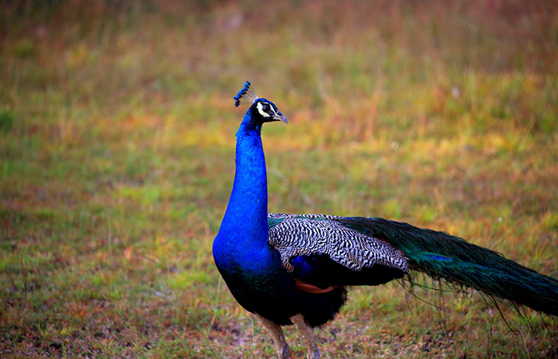
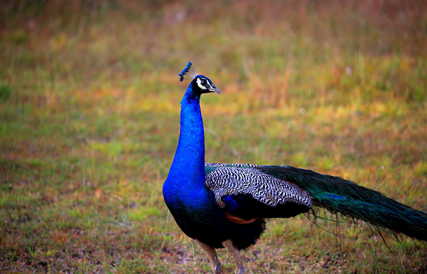

Located on Sri Lanka's northwest coast, Wilpattu National Park is one of the island nation's most important and oldest wildlife reserves. Wilpattu is Sri Lanka's largest national park, covering an area of over 1,317 square kilometers. The Sinhala words "Wil" (lakes) and "Pattu" (ten) are the origin of the park's name, "Wilpattu," which refers to the many natural lakes that dot the terrain.
The ecosystems found in Wilpattu National Park are widely recognized and include dense woods, open grassy plains, coastal marshes, and scrublands. It is a biodiversity hotspot in the area because of the distinctive topography, which provides an excellent home for a wide range of plants and animals. An important source of water for the park's resident species, the many "villus" or natural lakes contribute to the ecological richness of the area.
The park's population of elusive and magnificent Sri Lankan leopards (Panthera pardus kotiya) is one of its most notable features. One of the best places in Sri Lanka to see these elusive big cats in their native environment is Wilpattu. In addition to leopards, the park is home to a wide variety of other animal species, such as water buffalo, Asian elephants, sloth bears, spotted deer, and sambar deer.
With almost 200 species of birds identified, Wilpattu National Park has an exceptionally rich avifauna, making it a birdwatcher's dream. Many types of waterfowl, such as painted storks, spoonbills, and various eagle and owl species, are drawn to the lakes and other bodies of water in the park.
Notable is also the cultural and historical significance of Wilpattu. The park's natural charm is enhanced by the archaeological remains and historical locations that stretch back to Sri Lanka's pre-colonial era. Explore the remains of historic reservoirs, stupa ruins, and Buddhist temples for an enthralling fusion of history and natural beauty.
Discovering Wilpattu National Park provides tourists with a distinctive safari experience, enabling them to take in the raw splendor of Sri Lanka's fauna against a backdrop of diverse topography. The park is a must-visit location for nature lovers and wildlife photographers alike because of its large size and very low tourist numbers, which combine to provide a tranquil and genuine animal encounter. Wilpattu National Park continues to be a representation of Sri Lanka's dedication to environmental preservation and eco-friendly travel, even as efforts are made to maintain and safeguard this priceless ecosystem.
Understanding Wilpattu National Park:
1. Location:
Situated in the northwest of Sri Lanka, Wilpattu National Park encompasses the districts of Puttalam and Mannar.
2. Biodiversity:
Wilpattu is renowned for having a wide variety of wildlife species living in its different environments. Among the occupants of note are
sloth bears, elephants, Sri Lankan leopards, many kinds of deer, and a wide variety of birds. The many "villus," or natural lakes, in the park add to its abundant biodiversity.
3. Best Time to Visit:
Although the park is open all year round, it is generally thought that the best time to see and explore animals is from February to October, which is the dry season.
Planning your visit:
1. Safari Options:
Wilpattu provides safaris in the morning and the evening. To truly appreciate the park's varied landscapes, think about going on a full-day safari for a more thorough experience.
2. Safari Vehicles:
Choose a safari jeep with a knowledgeable guide. Because of the park's diverse topography, effective exploration requires a reliable vehicle.
3. Entrance fee:
Before making travel arrangements, check the official website or get in touch with the relevant local authorities for the most recent information on entrance fees and other expenses.
Preservation and Conscientious Travelers:
1. Remain on Assigned Paths:
Follow park guidelines and stick to authorized routes to reduce your environmental impact.
2. Respect the Locals around:
When at the park, pay homage and acknowledge the neighboring settlements. Accept regional traditions and make an effort to reduce your environmental impact.
3. Report violations:
Report any illicit activity you come across in the park to the park officials.


 
